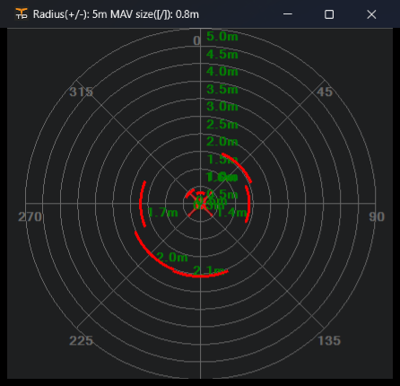

Start with the board on the bench
The flight controller I expected to be a Pixhawk 6C turned out to be a Pixhawk 6X: the PX4 version command reported PX4_FMU_V6X and board id 53, so every firmware from here on targets the 6X. ArduPilot supports the RPLidar natively, which made it the right first step: if the lidar works there, the wiring and the sensor are proven before any new code is written.
Wire the lidar to TELEM2
The A2M12 is a 3.3 V UART device at 256000 baud with five wires: red 5 V, yellow TX, green RX, black ground and blue MOTOCTL. Yellow goes to TELEM2 pin 3, green to pin 2, black to pin 6. In ArduCopter that becomes SERIAL2_PROTOCOL 11, SERIAL2_BAUD 256, flow control off and PRX1_TYPE 5.
The first trap: detected, but no data
ArduPilot found the lidar and read its model and firmware, yet no distances arrived. The motor was not spinning. MOTOCTL has an internal pull-down, so the blue wire must be tied to 3 to 5 V or the motor stays off while the sensor still answers commands. Moving the blue wire to 5 V fixed it immediately.
Confirm in three tools
The scan was checked in my own terminal viewer, in QGroundControl's MAVLink Inspector and in Mission Planner's proximity view. Left, right and back matched the room, and the front showed the laptop at 0.33 m.
What still needed fixing
Powered from the Pixhawk's own 5 V rail over USB, the supply measured 4.2 to 4.4 V, below the lidar's 4.9 V minimum. Fine for a bench test, not for flight: the lidar gets its own BEC before any flying.
Project record
Scope: PX4 driver and patches, ground-station displays and bench integration on two flight controllers. Collision Prevention in flight has not been tested yet.